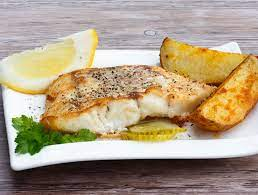

Baked fish is a culinary technique that involves cooking fish in an oven using dry heat. The fish is seasoned, placed in a baking dish, and then baked until tender and flaky. It's a healthy and versatile method, often paired with various seasonings and served alongside complementary side dishes for a delicious meal.
1. Preheat your oven to the desired temperature, typically around 350°F (175°C), and grease a baking dish lightly with olive oil or non-stick cooking spray.
2. Rinse and pat dry the fresh fish fillets with paper towels, ensuring they are clean and moisture-free.
3. In a small bowl, prepare a marinade by combining olive oil, lemon juice, minced garlic, and your choice of herbs and spices. Common choices include thyme, rosemary, paprika, salt, and black pepper.
4. Brush or drizzle the marinade over both sides of the fish fillets, ensuring they are well-coated with the flavorings.
5. Place the seasoned fish fillets in the prepared baking dish.
6. Cover the baking dish with foil or a lid to help trap moisture and flavor while baking.
7. Bake the fish in the preheated oven for about 15-20 minutes per inch of thickness, or until the fish is opaque and easily flakes with a fork. Cooking times may vary depending on the type and thickness of the fish.
8. While baking, feel free to baste the fish with any remaining marinade to keep it moist and flavorful.
9. Once the fish is cooked through, remove it from the oven and let it rest for a few minutes.
10. Garnish the baked fish with fresh herbs, such as parsley or dill, and slices of fresh lemon for a vibrant and aromatic finish.
11. Serve your delicious Baked Fish hot, accompanied by your choice of side dishes like roasted vegetables, rice, or a crisp salad.